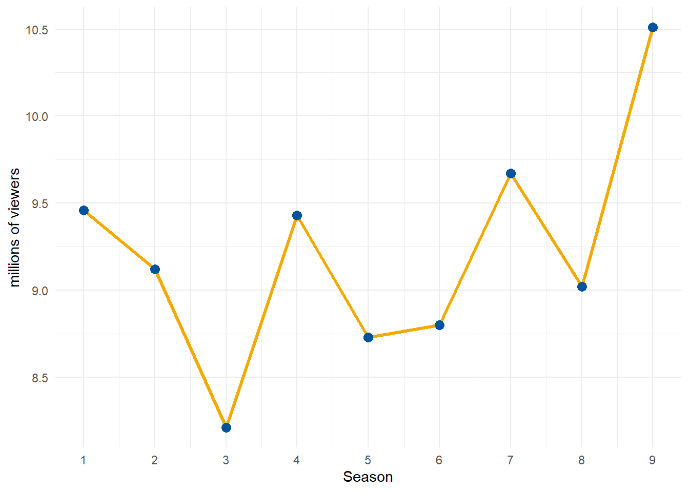
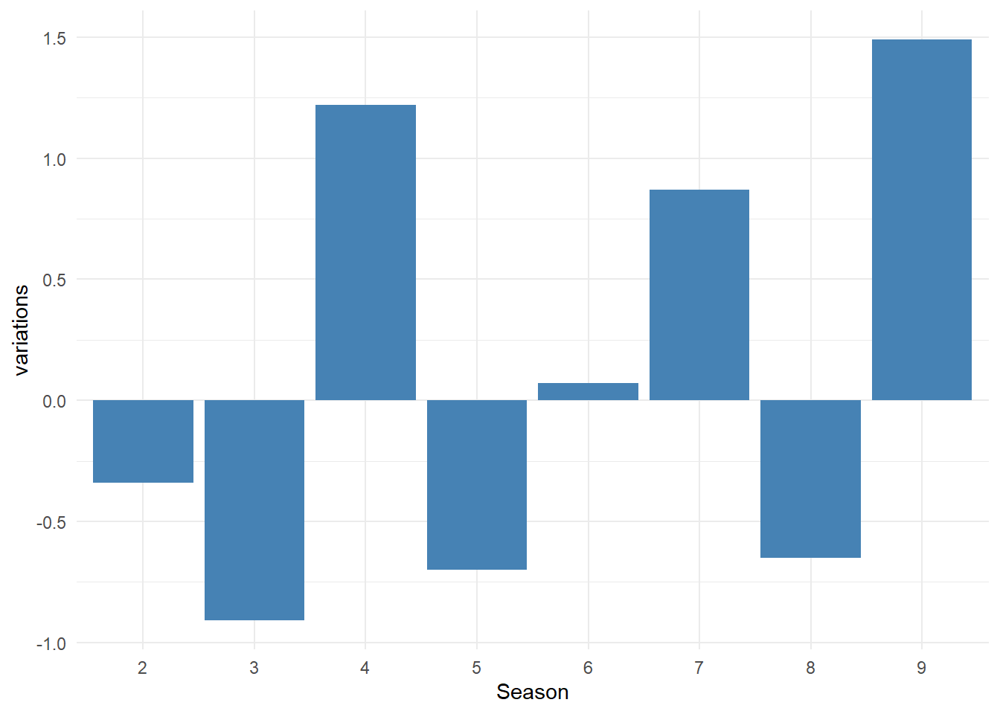

Audience analisis: How i met your mother
Audience analsys: How i met your mother

Brief description of the show
The series follows the adventures of Ted Mosby and his love life as a single man. His stories are narrated by Ted Mosby 25 years later, as he tells them to his adolescent children, Luke and Penny. The narrative leads to a flashback, and the story proper starts in 2005 with 27-year-old Ted Mosby living in New York City and working as an architect. The story deals primarily with his best friends. These include the long-standing couple Marshall Eriksen, a law student, and Lily Aldrin, a kindergarten teacher, who have been dating for almost nine years when Marshall proposes; and the playboy Barney Stinson and the Canadian news reporter Robin Scherbatsky. All of the characters’ lives are intertwined. The series explores many story lines, including “will they or won’t they” relationships between Robin and each of the two single male friends, Marshall and Lily’s relationship, and the ups and downs of the characters’ careers.
The show’s frame story depicts Ted telling the story to his son Luke and daughter Penny as they sit on the couch in the year 2030. This frame is the show’s putative narrative present, and How I Met Your Mother exploits this narrative structure in numerous ways: to depict and re-depict events from multiple points of view; to set up jokes using quick and sometimes multiple flashbacks nested within the oral retelling; to substitute visual, verbal, or aural euphemisms for activities Ted does not want to talk about with his children.
Although the traditional love story structure begins when the lead characters first meet, How I Met Your Mother does not introduce Ted’s wife until the eighth-season finale and only announces her full name, Tracy McConnell, during the series finale. Her first name, Tracy, is mentioned in the first season at the end of episode nine.
Statistics of the viewership in all time
How I met your mother it maintained high visibility in all time, with a mean equal to 9.22 millions of viewers. The highest number of viewers was recorded in the ninth season 10.51 as we can see in the next plot
Time trend graph
Seasonal variations

Conclusion
In short, data analysis demonstrates how How I Met Your Mother has managed to maintain a loyal and even growing audience over the years, defying the natural decline in interest that often affects long-running sitcoms.
The all-time record number of viewers achieved during the ninth and final season (with an average of over 10 million) testifies to the enormous curiosity of the audience, who remained glued to the screen for nine years just to finally discover the identity of the mysterious “Mother.” A truly… legendary success!